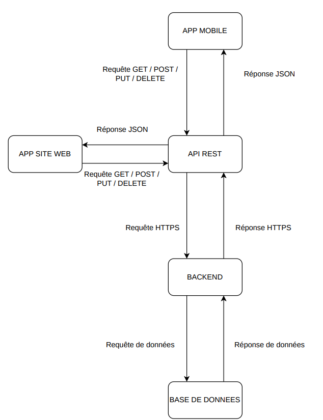
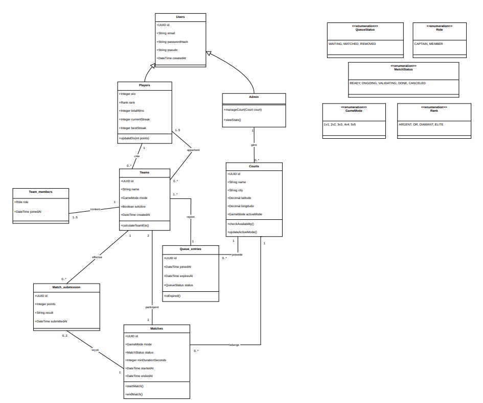
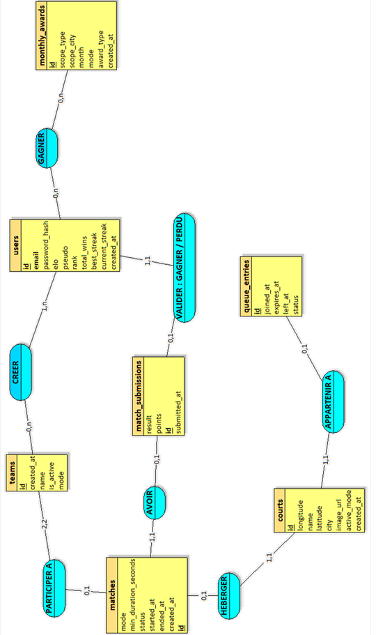
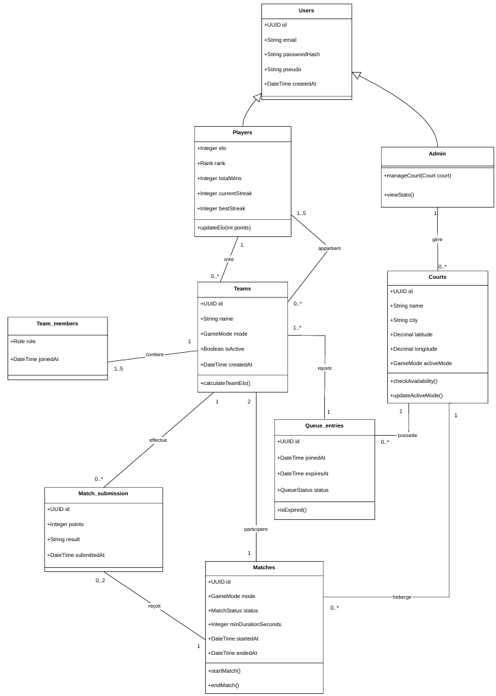
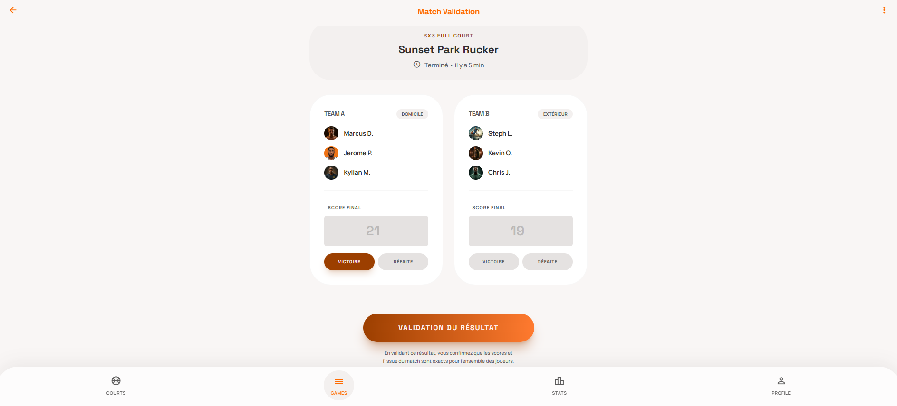
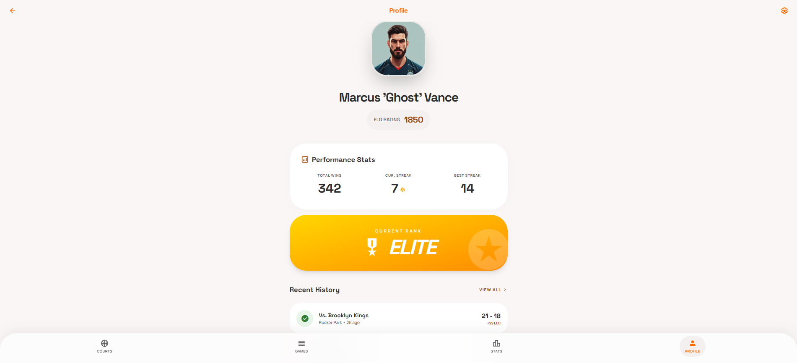

Démo interactive
Application Flutter compilée pour le navigateur, connectée à Supabase. Le chargement peut prendre quelques secondes au premier lancement.
Projet de fin de BTS SIO option SLAM (EPSI Montpellier, 2026) : solution numérique pour organiser les matchs de basketball sur les city-stades de Montpellier. Le projet est découpé en deux situations professionnelles — application mobile et backend.
Essayer la démo web Situation 1 (PDF) Situation 2 (PDF)
Application Flutter compilée pour le navigateur, connectée à Supabase. Le chargement peut prendre quelques secondes au premier lancement.
Face à la baisse de la pratique sportive chez les jeunes, la mairie de Montpellier souhaite encourager le basketball sur les terrains publics (Montcalm, complexe Jean Scialo, etc.). L'organisation des matchs reste informelle : files d'attente floues, attente longue, peu de visibilité sur l'affluence des terrains.
BB-Rank répond à ce besoin en digitalisant la mise en relation des joueurs, la gestion des files d'attente et le suivi des performances.
Conception et développement de l'application Flutter côté joueur.
Backend et exploitation des données pour fiabiliser les matchs et les statistiques.
Documents de situation et illustrations du projet.





